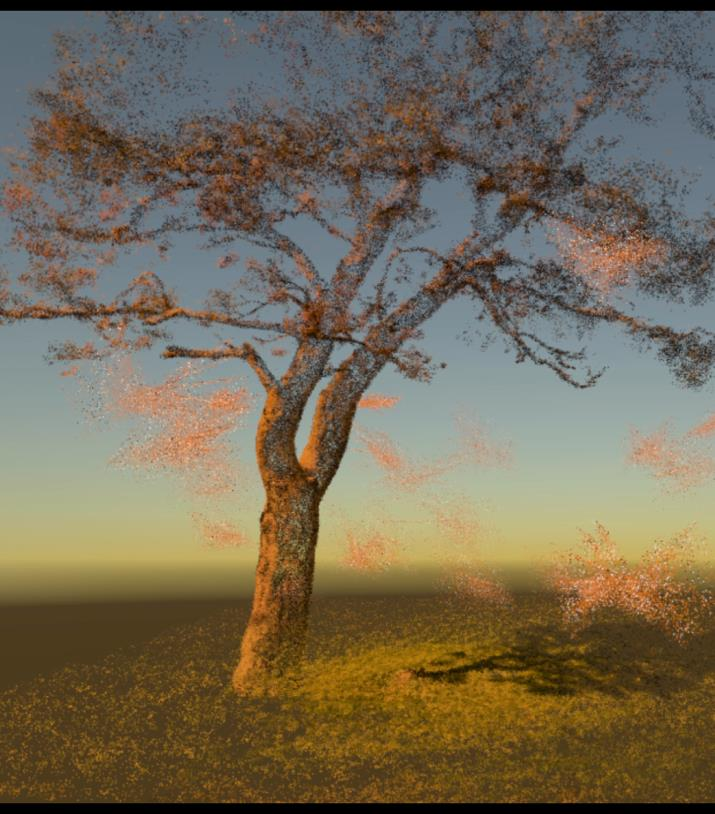
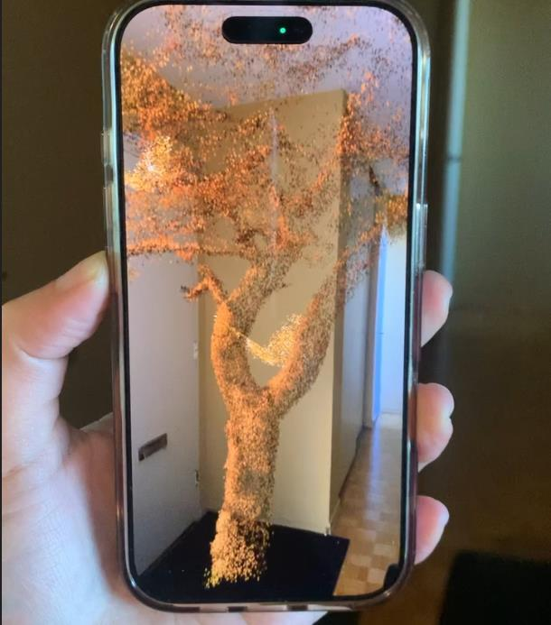
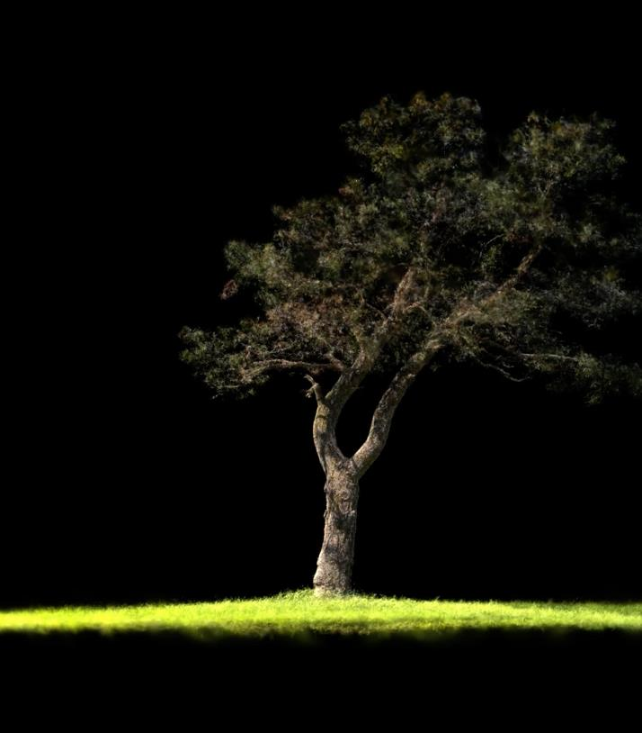
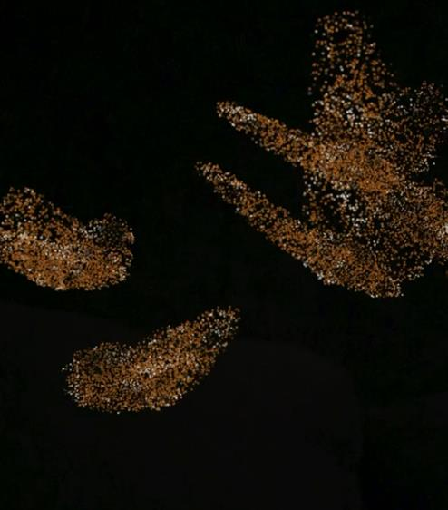
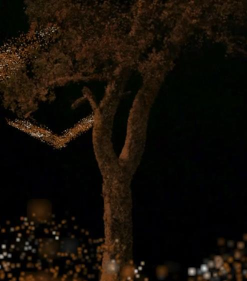

Augmented reality · 2026
Corpus Hormē AR
01 / Project
Live light and wind data become a responsive ecology of virtual trees, monarch point clouds, and spatial sound.
Corpus Hormē is an augmented reality artwork selected and funded for presentation at the RIXC Festival in Riga, Latvia, in October 2026.
The work explores environmental change and monarch butterfly vulnerability through a responsive audiovisual environment driven by live environmental data.
- Role
- AR development, audiovisual system, and data mapping
- Platform
- Unity, IoT, MQTT/Shiftr, spatial audio
- Data infrastructure
- Jane Tingley





Data as ecology
Environmental change is encountered as colour, turbulence, movement, and sound.
Live light measurements shape the warm tones and activity of the virtual tree and monarch point clouds, while wind data generate turbulence across the environment.
Field recordings, generative sound, and spatial audio extend the interaction: butterfly movement generates sonic events responsive to participant proximity, while approaching the tree reveals layers of wind and atmospheric sound.